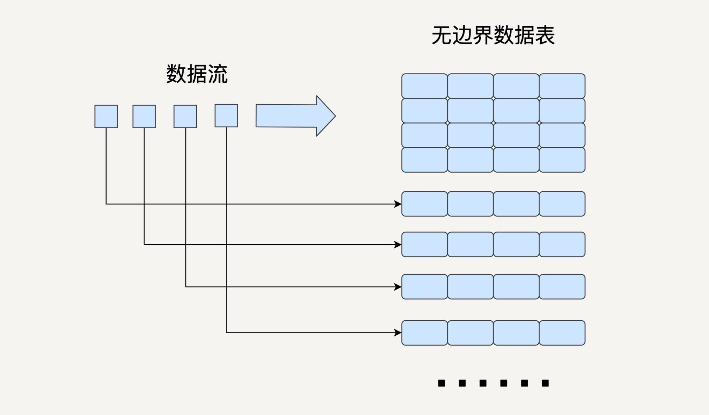

- 00 开篇词 从这里开始，带你走上硅谷一线系统架构师之路.md.html
- 01 为什么MapReduce会被硅谷一线公司淘汰？.md.html
- 02 MapReduce后谁主沉浮：怎样设计下一代数据处理技术？.md.html
- 03 大规模数据处理初体验：怎样实现大型电商热销榜？.md.html
- 04 分布式系统（上）：学会用服务等级协议SLA来评估你的系统.md.html
- 05 分布式系统（下）：架构师不得不知的三大指标.md.html
- 06 如何区分批处理还是流处理？.md.html
- 07 Workflow设计模式：让你在大规模数据世界中君临天下.md.html
- 08 发布_订阅模式：流处理架构中的瑞士军刀.md.html
- 09 CAP定理：三选二，架构师必须学会的取舍.md.html
- 10 Lambda架构：Twitter亿级实时数据分析架构背后的倚天剑.md.html
- 11 Kappa架构：利用Kafka锻造的屠龙刀.md.html
- 12 我们为什么需要Spark？.md.html
- 13 弹性分布式数据集：Spark大厦的地基（上）.md.html
- 14 弹性分布式数据集：Spark大厦的地基（下）.md.html
- 15 Spark SQL：Spark数据查询的利器.md.html
- 16 Spark Streaming：Spark的实时流计算API.md.html
- 17 Structured Streaming：如何用DataFrame API进行实时数据分析_.md.html
- 18 Word Count：从零开始运行你的第一个Spark应用.md.html
- 19 综合案例实战：处理加州房屋信息，构建线性回归模型.md.html
- 20 流处理案例实战：分析纽约市出租车载客信息.md.html
- 21 深入对比Spark与Flink：帮你系统设计两开花.md.html
- 22 Apache Beam的前世今生.md.html
- 23 站在Google的肩膀上学习Beam编程模型.md.html
- 24 PCollection：为什么Beam要如此抽象封装数据？.md.html
- 25 Transform：Beam数据转换操作的抽象方法.md.html
- 26 Pipeline：Beam如何抽象多步骤的数据流水线？.md.html
- 27 Pipeline I_O_ Beam数据中转的设计模式.md.html
- 28 如何设计创建好一个Beam Pipeline？.md.html
- 29 如何测试Beam Pipeline？.md.html
- 30 Apache Beam实战冲刺：Beam如何run everywhere_.md.html
- 31 WordCount Beam Pipeline实战.md.html
- 32 Beam Window：打通流处理的任督二脉.md.html
- 33 横看成岭侧成峰：再战Streaming WordCount.md.html
- 34 Amazon热销榜Beam Pipeline实战.md.html
- 35 Facebook游戏实时流处理Beam Pipeline实战（上）.md.html
- 36 Facebook游戏实时流处理Beam Pipeline实战（下）.md.html
- 37 5G时代，如何处理超大规模物联网数据.md.html
- 38 大规模数据处理在深度学习中如何应用？.md.html
- 39 从SQL到Streaming SQL：突破静态数据查询的次元.md.html
- 40 大规模数据处理未来之路.md.html
- FAQ第一期 学习大规模数据处理需要什么基础？.md.html
- FAQ第三期 Apache Beam基础答疑.md.html
- FAQ第二期 Spark案例实战答疑.md.html
- 加油站 Practice makes perfect！.md.html
- 结束语 世间所有的相遇，都是久别重逢.md.html
- 捐赠
17 Structured Streaming：如何用DataFrame API进行实时数据分析_
你好，我是蔡元楠。
上一讲中，我们介绍了Spark中的流处理库Spark Streaming。它将无边界的流数据抽象成DStream，按特定的时间间隔，把数据流分割成一个个RDD进行批处理。所以，DStream API与RDD API高度相似，也拥有RDD的各种性质。
在第15讲中，我们比较过RDD和DataSet/DataFrame。你还记得DataSet/DataFrame的优点吗？你有没有想过，既然已经有了RDD API，我们为什么还要引入DataSet/DataFrame呢？
让我们来回顾一下DataSet/DataFrame的优点（为了方便描述，下文中我们统一用DataFrame来代指DataSet和DataFrame）：
- DataFrame 是高级API，提供类似于SQL的query接口，方便熟悉关系型数据库的开发人员使用；
- Spark SQL执行引擎会自动优化DataFrame程序，而用RDD API开发的程序本质上需要工程师自己构造RDD的DAG执行图，所以依赖于工程师自己去优化。
那么我们自然会想到，如果可以拥有一个基于DataFrame API的流处理模块，作为工程师的我们就不需要去用相对low level的DStream API去处理无边界数据，这样会大大提升我们的开发效率。
基于这个思想，2016年，Spark在其2.0版本中推出了结构化流数据处理的模块Structured Streaming。
Structured Streaming是基于Spark SQL引擎实现的，依靠Structured Streaming，在开发者眼里，流数据和静态数据没有区别。我们完全可以像批处理静态数据那样去处理流数据。随着流数据的持续输入，Spark SQL引擎会帮助我们持续地处理新数据，并且更新计算结果。
今天，就让我们来一起学习Structured Streaming的原理以及应用。
Structured Streaming模型
流数据处理最基本的问题就是如何对不断更新的无边界数据建模。
之前讲的Spark Streaming就是把流数据按一定的时间间隔分割成许多个小的数据块进行批处理。在Structured Streaming的模型中，我们要把数据看成一个无边界的关系型的数据表。每一个数据都是表中的一行，不断会有新的数据行被添加到表里来。我们可以对这个表做任何类似批处理的查询，Spark会帮我们不断对新加入的数据进行处理，并更新计算结果。

与Spark Streaming类似，Structured Streaming也是将输入的数据流按照时间间隔（以一秒为例）划分成数据段。每一秒都会把新输入的数据添加到表中，Spark也会每秒更新输出结果。输出结果也是表的形式，输出表可以写入硬盘或者HDFS。
这里我要介绍一下Structured Streaming的三种输出模式。
- 完全模式（Complete Mode）：整个更新过的输出表都被写入外部存储；
- 附加模式（Append Mode）：上一次触发之后新增加的行才会被写入外部存储。如果老数据有改动则不适合这个模式；
- 更新模式（Update Mode）：上一次触发之后被更新的行才会被写入外部存储。
需要注意的是，Structured Streaming并不会完全存储输入数据。每个时间间隔它都会读取最新的输入，进行处理，更新输出表，然后把这次的输入删除。Structured Streaming只会存储更新输出表所需要的信息。
Structured Streaming的模型在根据事件时间（Event Time）处理数据时十分方便。
我们在第六讲中曾经讲过事件时间和处理时间（Processing Time）的区别。这里我再简单说一下。事件时间指的是事件发生的时间，是数据本身的属性；而处理时间指的是Spark接收到数据的时间。
很多情况下，我们需要基于事件时间来处理数据。比如说，统计每个小时接到的订单数量，一个订单很有可能在12:59被创建，但是到了13:01才被处理。
在Structured Streaming的模型中，由于每个数据都是输入数据表中的一行，那么事件时间就是行中的一列。依靠DataFrame API提供的类似于SQL的接口，我们可以很方便地执行基于时间窗口的查询。
Streaming DataFrame API
在Structured Streaming发布以后，DataFrame既可以代表静态的有边界数据，也可以代表无边界数据。之前对静态DataFrame的各种操作同样也适用于流式DataFrame。接下来，让我们看几个例子。
创建DataFrame
SparkSession.readStream()返回的DataStreamReader可以用于创建流DataFrame。它支持多种类型的数据流作为输入，比如文件、Kafka、socket等。
socketDataFrame = spark
.readStream
.format("socket"）
.option("host", "localhost")
.option("port", 9999)
.load()
上边的代码例子创建了一个DataFrame，用来监听来自localhost:9999的数据流。
基本的查询操作
流DataFrame同静态DataFrame一样，不仅支持类似SQL的查询操作（如select和where等），还支持RDD的转换操作（如map和filter）。 让我们一起来看下面的例子。
假设我们已经有一个DataFrame代表一个学生的数据流，即每个数据是一个学生，每个学生有名字（name）、年龄（age）、身高（height）和年级（grade）四个属性，我们可以用DataFrame API去做类似于SQL的Query。
df = … // 这个DataFrame代表学校学生的数据流，schema是{name: string, age: number, height: number, grade: string}
df.select("name").where("age > 10") // 返回年龄大于10岁的学生名字列表
df.groupBy("grade").count() // 返回每个年级学生的人数
df.sort_values([‘age’], ascending=False).head(100) //返回100个年龄最大的学生
在这个例子中，通过第二行我们可以得到所有年龄在10岁以上的学生名字，第三行可以得到每个年级学生的人数，第四行得到100个年龄最大的学生信息。此外，DataFrame还支持很多基本的查询操作，在此不做赘述。
我们还可以通过isStreaming函数来判断一个DataFrame是否代表流数据。
df.isStreaming()
基于事件时间的时间窗口操作
在学习Spark Streaming的时间窗口操作时，我们举过一个例子，是每隔10秒钟输出过去60秒的前十热点词。这个例子是基于处理时间而非事件时间的。
现在让我们设想一下，如果数据流中的每个词语都有一个时间戳代表词语产生的时间，那么要怎样实现，每隔10秒钟输出过去60秒内产生的前十热点词呢？你可以看看下边的代码。
words = ... #这个DataFrame代表词语的数据流，schema是 { timestamp: Timestamp, word: String}
windowedCounts = words.groupBy(
window(words.timestamp, "1 minute", "10 seconds"),
words.word
).count()
.sort(desc("count"))
.limit(10)
基于词语的生成时间，我们创建了一个窗口长度为1分钟，滑动间隔为10秒的window。然后，把输入的词语表根据window和词语本身聚合起来，并统计每个window内每个词语的数量。之后，再根据词语的数量进行排序，只返回前10的词语。
在Structured Streaming基于时间窗口的聚合操作中，groupBy是非常常用的。
输出结果流
当经过各种SQL查询操作之后，我们创建好了代表最终结果的DataFrame。下一步就是开始对输入数据流的处理，并且持续输出结果。
我们可以用Dataset.writeStream()返回的DataStreamWriter对象去输出结果。它支持多种写入位置，如硬盘文件、Kafka、console和内存等。
query = wordCounts
.writeStream
.outputMode("complete")
.format("csv")
.option("path", "path/to/destination/dir")
.start()
query.awaitTermination()
在上面这个代码例子中，我们选择了完全模式，把输出结果流写入了CSV文件。
Structured Streaming与Spark Streaming对比
接下来，让我们对比一下Structured Streaming和上一讲学过的Spark Streaming。看看同为流处理的组件的它们各有什么优缺点。
简易度和性能
Spark Streaming提供的DStream API与RDD API很类似，相对比较低level。
当我们编写 Spark Streaming 程序的时候，本质上就是要去构造RDD的DAG执行图，然后通过 Spark Engine 运行。这样开发者身上的担子就很重，很多时候要自己想办法去提高程序的处理效率。这不是Spark作为一个数据处理框架想看到的。对于好的框架来说，开发者只需要专注在业务逻辑上，而不用操心别的配置、优化等繁杂事项。
Structured Streaming提供的DataFrame API就是这么一个相对高level的API，大部分开发者都很熟悉关系型数据库和SQL。这样的数据抽象可以让他们用一套统一的方案去处理批处理和流处理，不用去关心具体的执行细节。
而且，DataFrame API是在Spark SQL的引擎上执行的，Spark SQL有非常多的优化功能，比如执行计划优化和内存管理等，所以Structured Streaming的应用程序性能很好。
实时性
在上一讲中我们了解到，Spark Streaming是准实时的，它能做到的最小延迟在一秒左右。
虽然Structured Streaming用的也是类似的微批处理思想，每过一个时间间隔就去拿来最新的数据加入到输入数据表中并更新结果，但是相比起Spark Streaming来说，它更像是实时处理，能做到用更小的时间间隔，最小延迟在100毫秒左右。
而且在Spark 2.3版本中，Structured Streaming引入了连续处理的模式，可以做到真正的毫秒级延迟，这无疑大大拓展了Structured Streaming的应用广度。不过现在连续处理模式还有很多限制，让我们期待它的未来吧。
对事件时间的支持
就像我们在前边讲过的，Structured Streaming对基于事件时间的处理有很好的支持。
由于Spark Streaming是把数据按接收到的时间切分成一个个RDD来进行批处理，所以它很难基于数据本身的产生时间来进行处理。如果某个数据的处理时间和事件时间不一致的话，就容易出问题。比如，统计每秒的词语数量，有的数据先产生，但是在下一个时间间隔才被处理，这样几乎不可能输出正确的结果。
Structured Streaming还有很多其他优点。比如，它有更好的容错性，保证了端到端exactly once的语义等等。所以综合来说，Structured Streaming是比Spark Streaming更好的流处理工具。
思考题
在基于事件时间的窗口操作中，Structured Streaming是怎样处理晚到达的数据，并且返回正确结果的呢？
比如，在每十分钟统计词频的例子中，一个词语在1:09被生成，在1:11被处理，程序在1:10和1:20都输出了对应的结果，在1:20输出时为什么可以把这个词语统计在内？这样的机制有没有限制？
欢迎你把自己的答案写在留言区，与我和其他同学一起讨论。
如果你觉得有所收获，也欢迎把文章分享给你的朋友。
© 2019 - 2023 Liangliang Lee. Powered by gin and hexo-theme-book.